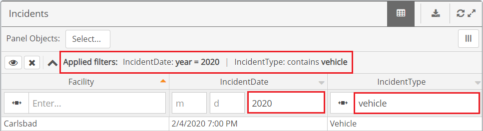

Filters may be applied to the columns shown in the Data View table. Some filters may already be pre-configured for you. However, you may edit or add your own column filters.
You can filter the data displayed by any column shown. Multiple filters can be applied and the display is refreshed once you click Apply Filter(s).
Applied Filters are shown at the top of the panel in table view, or at the bottom in chart view, so that you can easily see any filters that have already been applied. On a smaller screen or with many filters, the info may be truncated. Click the expand button to the left to show all applied filter info.

Below the "Applied filters" summary is a row showing the column filter options. The row with the column filter settings may be hidden from view by clicking the Toggle button.
When hidden, the filter settings row will not be seen. Click Toggle again to view them.
To apply a filter, select the filter field to see options. For some fields you must click the icon to select a filter option first.
Text fields require choosing an operative: Contains, Does Not Contain, Begins With, Ends With, Is Empty, or Is Not Empty. You can then enter text to use in the filter.

Drop-down list choices will be presented for those field types. If the list is long, you can type a few characters to find the value you want. If multiple selections are allowed, the number selected will be displayed in the filter box. Click on the number to see the selections. Click in the select box to edit the selections.

To filter for users or groups, you must first click the icon to choose either Users or Groups. Then click the Select Filter box to see the appropriate list and make your selections. If the list is long, you can type a few characters to find the value you want. The number selected will be displayed in the filter box. Click on the number to see the selections. Click in the select box to edit the selections.

For a date field, you may enter a complete or partial date (for example, just the year). Date fields require choosing an operative.

Numeric fields require selecting a comparison type.

Click the X next to the Applied Filters summary.

All column filters, except for pre-configured filters set up by the designer, will be removed and the display returned to the default.